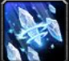
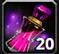
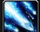

Frost Mage Guide For Patch 11.1
Frost Mage Guide For Patch 11.1
Welcome to my Season 1 Patch 11.1 Frost Mage guide. This guide will help you master your Frost Mage in all aspects of the game including raids and dungeons.
Overview
Frost Mage is a cloth wearing ranged damage dealer that excels at damaging and kiting stacked enemies.
Frost Mages enjoy some substantial bonus damage when fighting targets that can be frozen thanks to
 Shatter, which includes most non-boss enemies.
As Frost Mage is a mage it has extremely good personal and group utility such as
Shatter, which includes most non-boss enemies.
As Frost Mage is a mage it has extremely good personal and group utility such as
 Shimmer/
Shimmer/ Ice Floes,
Ice Cold/ Ice Block,
Arcane Intellect, Mass Barrier,
Ice Floes,
Ice Cold/ Ice Block,
Arcane Intellect, Mass Barrier,  Greater Invisibility and
Ice Barrier. Every Mage spec has their own special defensive capability.
For example, Fire Mage has Cauterize while Arcane has Arcane Barrier, which is more useful than the other two barriers.
Frost Mage has
Greater Invisibility and
Ice Barrier. Every Mage spec has their own special defensive capability.
For example, Fire Mage has Cauterize while Arcane has Arcane Barrier, which is more useful than the other two barriers.
Frost Mage has  Cold Snap, which resets the cooldown of
Ice Barrier and Ice Block/ Ice Cold.
Cold Snap, which resets the cooldown of
Ice Barrier and Ice Block/ Ice Cold.
Stat Priority
Intellect > Haste ≥ Critical Strike ≥ Versatility > Mastery
Something important to note is that after 33,34% Crit it loses effectiveness as every Shatter will crit after reaching that threshold.
Strengths & Weaknesses
Strengths:
- Extreme survivability with numerous defensives, including
Ice Barrier,
Ice Block/Ice Cold
(twice with
 Cold Snap),
Cold Snap),
 Alter Time,
Mirror Image, and
Alter Time,
Mirror Image, and
 Greater Invisibility.
Greater Invisibility.
- Extra damage to rootable enemies thanks to
Shatter.
- Very effective against two stacked targets with Splitting Ice.
- Flexible damage profile that provides substantial burst during
 Icy Veins, while not being too weak without it.
Icy Veins, while not being too weak without it.
- Mob control with many tools to slow and root enemies, such as
 Frost Nova,
Frost Nova,
 Freeze, and
Freeze, and
 Frostbolt.
Frostbolt.
Weaknesses:
- Thanks to
 Thermal Void,
Icy Veins can last long enough that it will sometimes be hard to fully avoid downtime during it.
Thermal Void,
Icy Veins can last long enough that it will sometimes be hard to fully avoid downtime during it.
- No spread cleave if targets are separated.
- Limited sustained self-healing makes it easy to die to continuous damage intake.
Consumables
- The best flask depends on your stat distribution, but mostly you want to use Flask of Tempered Swiftness or Flask of Alchemical Chaos
- Tempered Potion is the best for damage for every class and specialization.
- Algari Healing Potion is the best healing potion for every class and specialization.
- Algari Mana Oil is the best weapon buff available for Mage.
Best Races for Frost Mage
The choice of your race is mostly a cosmetic one; however, if you care about top performance, the best race depends
on the type of content you are doing. Races that increase Critical Strike damage, such as
Tauren or
Dwarf, are good choices
to maximize damage output. Another very good race that most people during RWF played was Mechagnome, which has
the highest damage output for Mage because of Combat Analysis.
For M+ the best choices available are Dwarf and Night Elf. Due to them having the best defensive racials in the game
(
 Stoneform and
Stoneform and
 Shadowmeld), which help a lot defensively.
Shadowmeld), which help a lot defensively.
Frost Mage Changes with Patch 11.1
Frost Mage has recieved some signifcant changes for Patch 11.1.
In current tuning Frostfire is generally the preferred choice of hero talent
 Ice Lance casts that consume
Ice Lance casts that consume
 Fingers of Frost no longer consume
Fingers of Frost no longer consume
 Winter's Chill and the duration of
Winter's Chill was increased to 8 seconds.
This is an amazing change because previously a large number of
Fingers of Frost instances were wasted because there was no good way to
avoid casting them into a target with
Winter's ChillWinter's Chill, which never felt very good.
Winter's Chill and the duration of
Winter's Chill was increased to 8 seconds.
This is an amazing change because previously a large number of
Fingers of Frost instances were wasted because there was no good way to
avoid casting them into a target with
Winter's ChillWinter's Chill, which never felt very good.
Freezing Winds was reworked and no longer generates
Fingers of Frost. While this may seem like a negative change at first,
it did result in Frost Mages being flooded with uses of
Fingers of Frost and forced
 Blizzard to keep
Ice Lance weak.
Blizzard to keep
Ice Lance weak.
Blizzard's radius and duration were increased from 8 yards and 8 seconds
to 12 yards and 12 seconds, respectively. This makes the spell significantly easier to use when targets are spread out or moving around a lot.
This will be especially noticeable when kiting in solo content and when your tank is running around a lot in group content.
Spellslinger Changes:
There is only a small change for Spellslinger in patch 11.1:
The change for Spellslinger is that you generate
Frost Splinters when you consume
Fingers of Frost and it works the same
for when you consume Winter's Chill.
Frostfire Changes:
For Frostfire, one noteworthy change is that  Excess Fire
and
Excess Fire
and  Excess Frost now stack up to 2 times. These 2 are now used in a less problematic way.
Excess Frost now stack up to 2 times. These 2 are now used in a less problematic way.
- You gain Excess Fire from casting Comet Storm
- Excess Fire
is still consumed by Ice Lance
- Excess Frost is now gained by consuming Excess Fire
- Excess Frost
is Still consumed when you cast
 Flurry
Flurry
This means that you are not required to track Fire mastery and Frost mastery anymore.
Excess Frost now reduces the cooldown of Comet Storm by 3 instead of 10 seconds. The rotation now creates a gameplay loop where
Comet Storm gives you
Excess Fire which gives you
Excess Frost reducing the cooldown of
Comet Storm to give you more Comet Storms.
Something to take note off is when you get a lot of  Frostfire Empowerment during
Icy Veins you could potentially overcap on
Excess Frost and Excess Fire.
This will force you into talenting Comet Storm when playing Frostfire.
Frostfire Empowerment during
Icy Veins you could potentially overcap on
Excess Frost and Excess Fire.
This will force you into talenting Comet Storm when playing Frostfire.